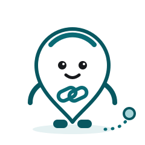
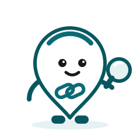
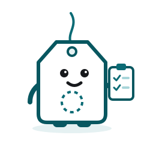
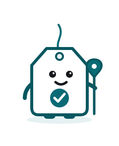
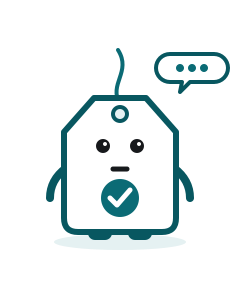

리뉴맵 캐릭터
같은 몸 비율 · 같은 눈 · 같은 발. 모양만 보고도 하는 일을 압니다.

이음 지도 핀 + 고리 · 동네와 자료를 잇고 찾습니다.- 새움 작은 건물 + 안전모 · 낡은 곳을 다시 세우는 현장 담당.
 태기 근거 꼬리표 + 확인 표시 · 출처와 기준일을 붙입니다.
태기 근거 꼬리표 + 확인 표시 · 출처와 기준일을 붙입니다.
이음

새움
태기



작게 써도 보이는지
색: 사이트 청록(#0b6b75) · 짙은 청록(#085760) · 안전모 주황(#e8b86d) · 기준일 2026-11-22